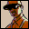

Grand Theft Auto San AndreasDetalles
 |
|
| Tiempo de juego | 2m 12s |
| Última actividad | 16/1/2026 12:06:11 |
| Añadido | 6/11/2025 12:43:20 |
| Modificado | 3/12/2025 11:53:40 |
| Estado de finalización | Jugado |
| Librería | Playnite |
| Fuente | |
| Plataforma | PC (Windows) |
| Fecha de lanzamiento | 26/10/2004 |
| Puntuación de la Comunidad | 90 |
| Puntuación de la Crítica | 93 |
| Puntuación de usuario | |
| Género | Adventure Racing Shooter |
| Desarrollador | Rockstar North |
| Editor | Rockstar Games Take-Two Interactive |
| Característica | Co-Operative Single Player |
| Enlaces | Community Wiki Steam |
| Tag | |
Descripción
Si hay un juego que definió una era y rompió todos los moldes, es este. No fue un juego más, fue el título que reventó la escala de lo que se podía hacer en un sandbox. Posta, acá Rockstar se fue al soberano carajo con el nivel de detalle y la libertad.
Volvés a los 90. Sos Carl "CJ" Johnson y tenés que volver a tu barrio, Grove Street, después de cinco años en Liberty City porque mataron a tu vieja. Lo que sigue es un quilombo descomunal para recuperar el respeto, vengar a tu familia y, de paso, dominar todo el estado de San Andreas.
Y cuando digo "estado", hablo de un mapa que, incluso hoy, sigue siendo una locura:
- Tres Ciudades Completas: Los Santos (L.A.), San Fierro (San Francisco) y Las Venturas (Las Vegas), conectadas por autopistas, campo, desiertos y bosques.
- Toques de RPG: ¡Acá tenías que comer! Podías (y debías) ir al gym, ponerte polenta o engordar si solo comías hamburguesas. Mejorabas tu habilidad de manejo, de tiro, el oxígeno bajo el agua...
- Customización Zarpada: Tuneá las naves (autos) como te pinte, cambiá la ropa de CJ, cortate el pelo, tatualo.
- Guerra de Pandillas: Conquistar los territorios de los Ballas era la que iba.
Este juego lo tiene todo: una historia tremenda, personajes icónicos, una libertad absoluta y una banda sonora que es historia pura del gaming. Si querés revivir la era dorada de PS2 o la PC de esa época, este es un juegazo obligatorio.